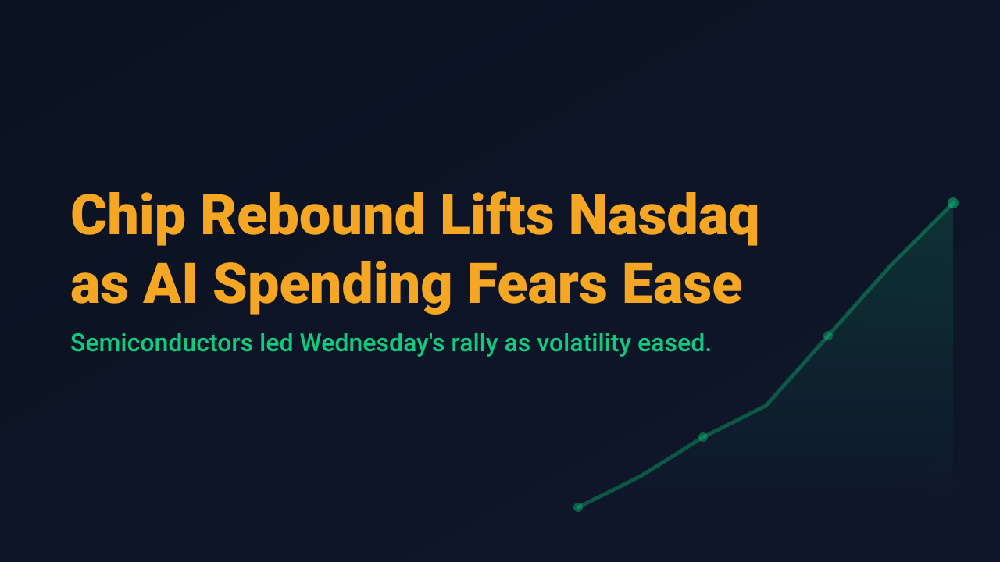
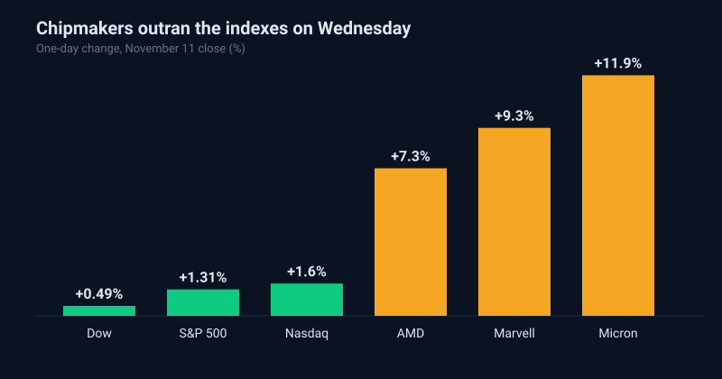

Chip Rebound Lifts Nasdaq as AI Spending Fears Ease

U.S. equities rebounded on Wednesday, November 11, as concerns about heavy artificial intelligence spending eased. The Nasdaq Composite rose 1.6% to 25,466.19, the S&P 500 gained 1.3% to roughly 7,619, and the Dow Jones Industrial Average added 0.49% to 52,486.49. The Cboe Volatility Index (VIX) fell about 10% to the 17.5 area, a sign that demand for portfolio protection receded after a rough start to the month.
The leadership was narrow and specific. Nvidia recovered after a sharp two-day slide tied to reports about its chief executive, and its rebound pulled other chipmakers higher. Micron rose about 11.9%, Marvell Technology about 9.3%, AMD about 7.3%, and Broadcom about 4%. CoreWeave also surged after reporting third-quarter revenue that beat estimates. The gap between the roughly 1.3% index gain and the high single-digit and double-digit moves in individual semiconductor names is the main feature of the session.
Breadth outside technology was also constructive, though less dramatic. Ten of the eleven S&P 500 sectors finished higher, and Apple closed at a record $355.63. Consumer discretionary was among the laggards. Trading volume was light: 14.74 billion shares changed hands, below the 18.68 billion 20-session average, which suggests the rally was driven by selective buying and short covering as much as by broad conviction.

For swing traders, a sharp one-day rebound in a group that had just sold off is not the same as a confirmed trend change. The move came on below-average volume, the semiconductor group had been under pressure only days earlier, and the macro backdrop still includes a 10-year Treasury yield near 5% and elevated oil prices. A single session of falling volatility can reverse quickly if the catalysts that caused the earlier decline return.
Wednesday's session showed how quickly sentiment can turn in a crowded theme. The disciplined response is to let the data confirm the move across several sessions, size positions for the elevated single-stock volatility, and treat the index-level gain as the smaller part of the story.